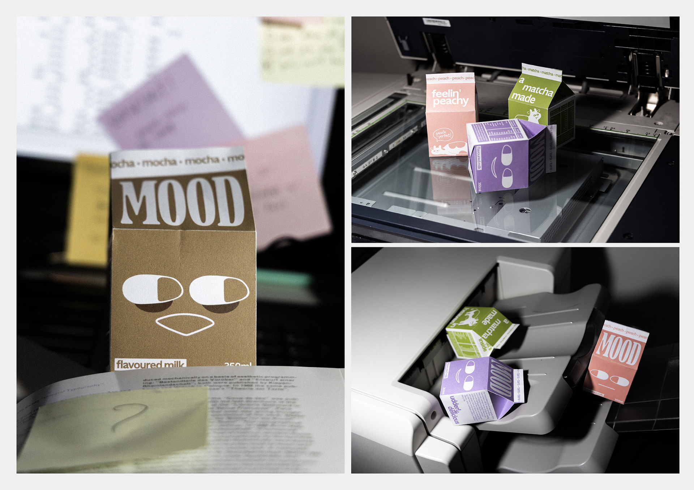
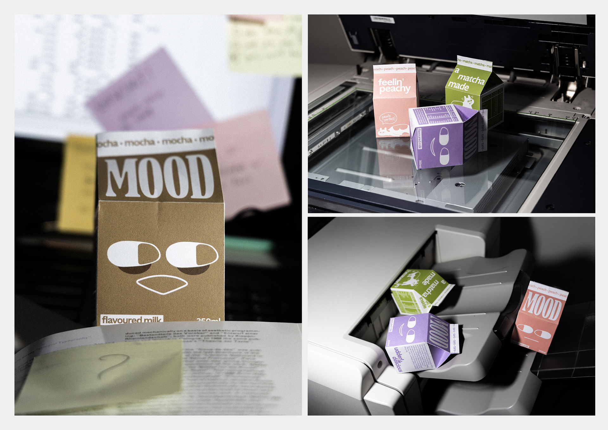
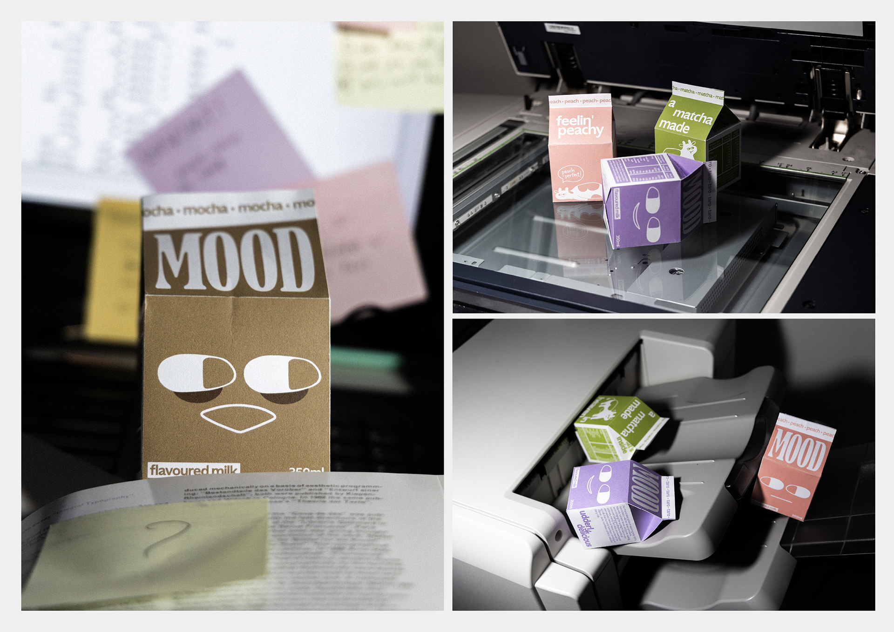

Art Direction
Photography/ Modelling
Marketing
The launch campaign, Not in the Mood, targets young professionals navigating the monotony of corporate life, using vibrant visuals to show Mood as a moment of joy amidst the chaos. The campaign spans social media, logistics branding, and suburban posters, supported by striking POS materials like shelf wobblers and branded carriers. Mood is more than milk—it’s a mood enhancer for modern life.
